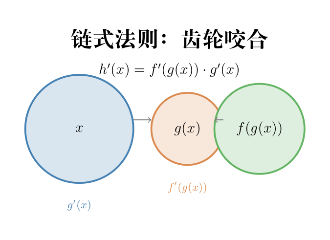

如果说梯度是"往哪走"，那链式法则就是"在多层的机器里，最里面那颗螺丝钉拧一下，最终输出会变多少"。这条规则单独看简单，但它是后面所有复杂求导的基础。

画面： 你面前有三个咬合在一起的齿轮。你转动第一个齿轮（输入 $x$），它带动第二个齿轮（中间结果 $g(x)$），第二个带动第三个（最终输出 $f(g(x))$）。
现在问：你拧第一个齿轮 1 圈，最后一个齿轮转几圈？
答案 = 第一个齿轮到第二个齿轮的传动比 × 第二个齿轮到第三个齿轮的传动比。
这就是链式法则：
$$h(x) = f(g(x)) \quad\Rightarrow\quad h'(x) = f'(g(x)) \cdot g'(x)$$从定义出发：
$$h'(x) = \lim_{\Delta x \to 0} \frac{f(g(x+\Delta x)) - f(g(x))}{\Delta x}$$令 $\Delta u = g(x+\Delta x) - g(x)$（中间变量因为 $x$ 变而变的量）。则 $g(x+\Delta x) = g(x) + \Delta u$，代入：
$$h'(x) = \lim_{\Delta x \to 0} \frac{f(g(x)+\Delta u) - f(g(x))}{\Delta x}$$关键技巧——凑出两个差商的乘积：
$$= \lim_{\Delta x \to 0} \underbrace{\frac{f(g(x)+\Delta u) - f(g(x))}{\Delta u}}_{\text{外层 f 在 g(x) 处的导数}} \cdot \underbrace{\frac{\Delta u}{\Delta x}}_{\text{内层 g 的差商}}$$当 $\Delta x \to 0$ 时，$\Delta u \to 0$（因为 $g$ 可导则连续），所以：
$$h'(x) = f'(g(x)) \cdot g'(x)$$推导同时回答了三个问题：
来一个具体例子：$h(x) = \sin(x^2)$
如果一个输入变量通过多条路径影响最终输出——就像一台机器同时驱动两条传送带——那总传动比 = 各条路径的传动比之和：
$$\frac{dz}{dx} = \frac{\partial z}{\partial y_1} \cdot \frac{dy_1}{dx} + \frac{\partial z}{\partial y_2} \cdot \frac{dy_2}{dx} + \cdots$$设 $z = f(y_1(x), y_2(x))$——最终输出 $z$ 通过两个中间变量 $y_1, y_2$ 依赖于 $x$。
全微分： $x$ 变 $\Delta x$，导致 $y_1$ 变 $\Delta y_1 \approx \frac{dy_1}{dx}\Delta x$，$y_2$ 变 $\Delta y_2 \approx \frac{dy_2}{dx}\Delta x$。
$y_1$ 和 $y_2$ 各自的变化都会影响 $z$——总变化 = 各路径贡献之和：
$$\Delta z \approx \frac{\partial z}{\partial y_1} \cdot \Delta y_1 + \frac{\partial z}{\partial y_2} \cdot \Delta y_2$$代入 $\Delta y_1$ 和 $\Delta y_2$ 的表达式：
$$\Delta z \approx \frac{\partial z}{\partial y_1} \cdot \frac{dy_1}{dx}\Delta x + \frac{\partial z}{\partial y_2} \cdot \frac{dy_2}{dx}\Delta x$$两边除以 $\Delta x$，取极限 $\Delta x \to 0$：
$$\frac{dz}{dx} = \frac{\partial z}{\partial y_1} \cdot \frac{dy_1}{dx} + \frac{\partial z}{\partial y_2} \cdot \frac{dy_2}{dx}$$直觉： 就像两条水渠汇入一个水库——上游放水，两条渠各自带走一部分水，水库水位变化 = 两条渠的贡献加起来。链式法则的加法来自各路径独立贡献的叠加。
画面： 发动机驱动两条传送带，两条传送带都汇到一个包装箱。发动机加速 → 两条传送带都加速 → 包装箱加速。总效应 = 两条路径的效应相加。
100 级齿轮咬合在一起。如果每级传动比都 < 1（比如 0.25），100 次连乘后 → $0.25^{100} \approx 0$——第一个齿轮拧 10000 圈，最后一个纹丝不动。如果每级都 > 1，最后一个会疯狂加速。
这和深度学习有什么关系？ 神经网络的反向传播就是在用链式法则求梯度——每一层的局部导数连乘起来。100 层网络 → 100 个因子连乘。大多数因子 < 1 → 梯度指数衰减（梯度消失，浅层学不到东西）；大多数因子 > 1 → 梯度指数爆炸（梯度爆炸，更新一步跨太远）。深层网络训练困难的根源就在这里——不是网络不聪明，是链式法则的乘法性质让深层梯度对每一层的缩放极其敏感。
$L = (wx - y)^2$。假设 $y$ 是常数（一个目标值），我们想知道 $w$ 变一点，$L$ 变多少。
import numpy as np
# ===== sin(x²) 验证链式法则 =====
def h(x):
# 复合函数
return np.sin(x ** 2)
def h_grad(x):
# 链式：cos(x²)·2x
return np.cos(x ** 2) * 2 * x
# 数值验证（中央差分）
def num_grad(f, x, eps=1e-5):
return (f(x+eps) - f(x-eps)) / (2*eps)
x = 1.5
print(f"h'(1.5) 数值={num_grad(h,x):.6f} 解析={h_grad(x):.6f}")
# 两个值应该几乎相同
# ===== 线性回归：一步梯度下降 =====
w, x_val, y = 0.5, 2.0, 1.0
# 前向：输入 → 预测 → 差值
# 预测 = 0.5×2.0 = 1.0
pred = w * x_val
# 差值的平方 = (1.0-1.0)² = 0.0
L = (pred - y) ** 2
# 从外层往内层，用链式法则求 ∂L/∂w
# 外层：∂L/∂pred
dloss_dpred = 2 * (pred - y)
# 内层：∂pred/∂w = x
dpred_dw = x_val
# 链式！∂L/∂w
dloss_dw = dloss_dpred * dpred_dw
print(f"\nL={L:.3f} ∂L/∂w={dloss_dw:.3f}")